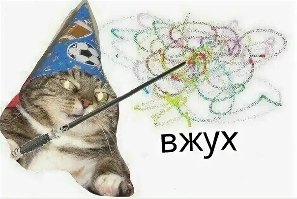
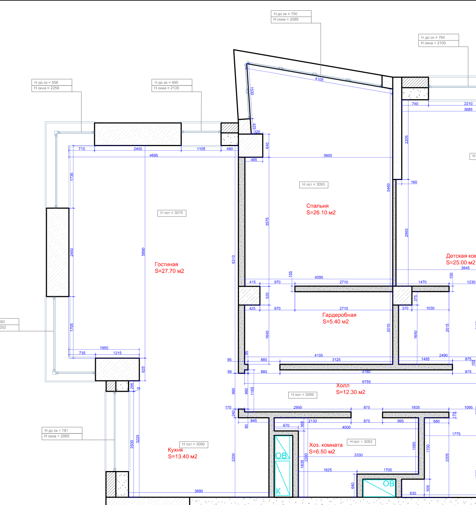

КТ1 · разбор ТЗКТ2–КТ3 · сборкаКТ — контрольная точка: агент печатает её в окнеКТ4 · проверка в Telegram
Репетиции 3 ноября: от «Ключей» до проверенного бота в Telegram — 18–25 минут. Пока помощники работают — разбираем ваши ТЗ.
Две встречи — и магия
Встреча 1 · 19 октябряНастроить под себягде работать, какие версии, пять настроек
Встреча 2 · 27 октябряПроект: от ТЗ до запускаТЗ, папка с правилами, агент в папке
СегодняМагиясемь сообщений — и бот готов

вжух
✦✦✦✦✦
Встреча 1 · 19 октября
Настроить под себя
Где работать
Телефонбыстрый вопрос на ходу
Браузердокументы и настройки
Приложение на компьютереагенты и большие задачи
Расширение в браузереработа на сайтах
Какие версии
Бесплатнаялимиты на файлы и картинки
Подпискадоступ для человека
Ключ APIдоступ для программ, оплата за объём
Пять настроек
Модель и уровень рассуждения
Личные инструкциишесть строк о вас и о работе
Память
Проектыпапка с правилами под задачу
Новая тема — новый чат
Встреча 2 · 27 октября
Проект: от ТЗ до запуска
Сначала ТЗ
Что и для кого
Где будет работатьчат, проект, скрипт или агент
С чем работаемфайлы, сайты, доступы
Шагиу каждого вход и выход
Результат и проверки
Проект — это папка
ТЗ и файлы задачи
Файл правилCLAUDE.md или AGENTS.md — чтобы не объяснять каждый раз
Агент в папкеClaude Code или Codex по подписке
Разово — чатрегулярно — бот или расписание
Нюансы
Доступ к даннымпароли не отдаём: файл, ключ, выгрузка
Персональные данныев облако — только по решению руководства
Проверкарезультат проверяем сами и вторым взглядом
Сегодня — дальше: пять ваших ТЗ в одном боте
Главное, что нужно уяснить
Общайтесьс чатом
Не понял. Объясни проще
Что нужно от меня, чтобы это заработало?
Упёрся — какие ещё есть пути?
Где ты мог ошибиться? Проверь себя
ТЗ в боте · 1 из 5 · tasks/рейсы/ТЗ.md
Подбор рейсов
что хотелиПереслать боту запрос «куда и когда» — получить черновик: 2–3 рейса бизнес‑классом по постоянным правилам, снимок и текст по каждому. Отправляет сама.
ЗапросПоиск: Яндекс, AviasalesОтбор по правиламСверка на другом сайтеСнимки рейсовГотовый черновикпересылает человеккапчакапчазапасной путь — руками
Где были неточности
В ТЗ «подключать ничего не нужно, сайты открываются без входа» — а сайты билетов не пускают программу.
Запасной путь в ТЗ — снимки экрана с телефона руками: это уже не автоматизация.
«Найти прежнюю низкую цену на Trip.com» — истории цен нет ни в одном источнике.
Как решено в боте
Цепочка путей: Aviasales — программой в настоящем Chrome, Яндекс — агентом в вашем браузере.
Третий источник — сайт авиакомпании: независимая сверка цены бизнеса и цена эконома.
Компьютер или сервер, включённый всегда: бот отвечает, когда вас нет.
ТЗ в боте · 2 из 5 · tasks/законодательство/ТЗ.md
Изменения законодательства
что хотелиРаз в месяц к 1‑му числу — таблица изменений по налогам, валютному регулированию и бухучёту: что изменилось, дата, ссылка на первоисточник. Приходит в Telegram сама.
Гарант: сравнение редакцийНовости РБК и ДПГосдума, ФНСАрбитражные судыТаблица Excel1‑го числа в Telegramпо учётке, рукамиленты — последние часыкапчанужен сервер
Где были неточности
Гарант — только по рабочей учётке: каждый месяц сохранять сравнения в Word руками.
Ленты новостей отдают последние часы — за месяц разом их не прочитать.
В ТЗ «агент на компьютере участника» — по расписанию без включённого компьютера не сработает.
Как решено в боте
Официальное опубликование — вход для программ; акты Москвы и Петербурга, Госдума, ФНС — обычными запросами.
По кнопке: выбрал период и тему — таблица за любой срок, 1‑го числа ждать не нужно.
Гарант — официальный доступ или рассылка изменений: спросить менеджера Гаранта.
ТЗ в боте · 3 из 5 · tasks/паркинг/ТЗ.md
Паркинг: склад или аренда
что хотелиЕсть модель объекта в Excel. Сравнить склад индивидуального хранения и ремонт со сдачей арендаторам: за сколько вернутся деньги и какая доходность.
Модель объектаВводныеПересчёт в ExcelСрок окупаемостиСравнение вариантовВывод комитетудля аренды не хваталобез срока ремонта
Где были неточности
Срок ремонта в модели не влиял на окупаемость — как будто деньги приходят с первого дня.
Для варианта с арендой не хватало вводных: какая доля площади сдаётся, заполняемость, расходы.
Формулы модели сложные — их честно пересчитывает только сам Excel.
Как решено в боте
Бот сам спрашивает все вводные по одной, у каждого вопроса кнопка «как в модели».
Расчёт по месяцам: деньги идут только после ремонта — срок окупаемости честный.
Пересчёт в установленном Excel; исходный файл не меняется.
ТЗ в боте · 4 из 5 · tasks/акции/ТЗ.md
Идеи акций для ресторана
что хотелиКаждый месяц по продажам из iiko — 5–10 идей акций: механика, блюдо, сроки, бюджет, ожидаемый эффект. Даты — по маркетинговому календарю.
Выгрузка из iikoБлюда и себестоимостьМаркетинговый календарьМаржа, лидеры, отстающиеИдеи акцийТаблица управляющемуобразца не былов отчёте её нет
Где были неточности
В ТЗ «столбцы: блюдо, кол‑во, выручка, себестоимость» — в отчёте iiko себестоимости нет, блюдо называется иначе.
В ТЗ не было образца выгрузки — как устроен файл, выяснили по настоящему отчёту.
Упаковка и модификаторы стоят среди блюд — попадут в акции.
Как решено в боте
Сегодня выгрузку закидывают в чат; дальше — рассылка отчёта iiko на почту, и бот берёт его сам.
Маячок: программа сначала пересказывает, как прочитала файл.
Считает код, ИИ только придумывает механики.
ТЗ в боте · 5 из 5 · tasks/смета/ТЗ.md
Смета:объёмы — руками
«Объёмы работ снимаю с чертежей вручную»участник из стройки, интервью в боте 23 октября
«Смета в Excel, в PDF — и клиенту»2–3 раза в неделю, иногда чаще
«Чертежи сами по себе ИИ не источник цифр»наш бот в том же интервью

Модель читает чертёж сама: площади, высоты, окна, размеры. Человеку — проверить и утвердить
обмерный план из открытого портфолио дизайн-студии
Смета — на одной комнате
Альбом PDFпланы, развёртки, ведомости
Ведомость объёмовпо помещениям, у каждой цифры — лист
Работыобъём × цена из прайса
Материалыпо нормам расхода и с запасом
Excel и PDFклиенту — после проверки
Пример: спальня из альбома 1
Размеры 3,91 × 3,52 м → периметр 14,85 млист «Обмерочный план»
Высота и проёмы 2,80 м · окно и дверь 8,15 м²лист «План покрытий стен»
Стены 14,85 × 2,80 − 8,15 = 33,4 м²считает код, не ИИ
Пол 13,02 м², ламинатлист «План пола»
Дальше — прайс, нормы, сверка
Штукатурка стен 33,4 м² × 650 ₽ = 21 700 ₽цена из вашего прайса
Ламинат 13,02 м² + 7 % ≈ 14 м²запас на подрезку, до целой упаковки
Сверка потолок 38 м² = подпись дизайнеране сошлось — в смете написано почему
Шесть способов достать данные
От надёжного к ручному. Подбираются под каждый источник отдельно.
Вход для программ (API)Сервис сам отдаёт данные по ключу. Официальное опубликование законов, панель серверов.
ВыгрузкаФайл, который система сохраняет сама. Отчёт iiko, выписка для 1С, рассылка отчёта на почту.
Готовая интеграцияПодключение уже есть в ChatGPT, Claude или почте. Для сайтов билетов её нет.
Агент в вашем браузереАгент работает в вашем настоящем Chrome — сайты пускают его как обычного посетителя. Яндекс.Путешествия, сайт авиакомпании, картотека судов.
Робот в браузереПрограмма сама открывает сайт. Ломается, когда сайт меняет вид. Google Flights, поиск Госдумы.
ВручнуюВы присылаете файл или снимок экрана. Сравнение редакций из Гаранта, снимки выдачи билетов.
Правило для всех задач: капчу не взламываем — ищем путь, где её нет; в чужие кабинеты не входим, пароли не просим.
Упёрлись — пробуем следующий путь
Программа сама идёт по путям, пока не найдёт открытый. Проверено 2 ноября на моём компьютере, с одного адреса.
Путь 1 · программа во встроенном браузере
Путь 2 · программа в настоящем Chrome
Путь 3 · агент в вашем Chrome
Яндекс.Путешествия
капча
капча
выдача, 55 с
Aviasales
капча
выдача
выдача
Google Flights
выдача, 29 с
не нужно
не нужно
Сайт Emirates
не проверяли
открывается
рейс и цена, 167 с
Картотека судов
капча
открывается
поиск дел, 108 с
Человек ничего не нажимает: закрыт путь — программа идёт по следующему. Закрыты все — бот пишет, какой источник недоступен, и собирает результат из остальных.
Страна: откуда вы выходите в интернет
Одним сайтам нужен российский адрес, другим — зарубежный. Это решается до покупки сервера.
Ваш компьютерили сервер
Через VPNвыход за рубежом
Напрямуюроссийский адрес
Claude, ChatGPT работают
aeroflot.ru ошибка 503
s7.ru Forbidden
Кадастровая карта не отвечает
Российские сайты открываются
Claude недоступен
Решение — раздельная маршрутизация: российские сайты напрямую, ИИ через VPN. Где будет сервер — решаете с руководителем.
Где это будет работать
Ответ зависит от того, кто пользуется.
Только я
Команда
ИИ
Подписка Claude: Claude Code работает как программа. Лимиты общие с вашей обычной работой
Ключ API с оплатой за запросы. Подписку отдавать другим нельзя
Компьютер
Свой, включённый круглосуточно
Сервер. Расчёты в Excel — Windows с Office
Кто может писать боту
Только ваш Telegram ID
Список разрешённых, у каждого свои данные
Сайты с капчей
Агент в вашем браузере
Официальный вход или выгрузка: ваш браузер на всех не разделить
Сегодня — вариант «только я»: моя подписка и мой компьютер.
Смотрим, что пришло
Пять кнопок в Telegram: что приходит и что сверяем с ТЗ.
кнопкачто приходитчто сверяем с ТЗна репетиции
01Подбор рейсов2–3 варианта, снимки, готовый текстправила из ТЗ и цена авиакомпании100 с
02ЗаконодательствоExcel со ссылками и PDF за периодкаждая ссылка ведёт на первоисточник28 с
03Паркингопрос по вводным, вывод, PDF и Excelсрок ремонта сдвигает возврат8 с
04Акции ресторанамаячок, 5–10 идей, таблица Excelв акциях нет упаковки и модификаторов46 с
05Смета по чертежамсмета клиенту: Excel и PDFобъёмы против подписей дизайнера≈ 45 с
Что-то не сходится с ТЗ — не спрашиваем того же агента «всё ли хорошо». Даём результат второму, который сборку не видел.
Дальше — так у вас
вывы, один разагентвам в Telegram
ТЗ — по сообщениючто хотите, откуда данные, что прислать
Ключитокен бота и ID — в .env, ИИ — ваша подписка Claude
Не трогаетесмотрите контрольные точки
Результатсвоя кнопка на каждую задачу
Ваша работа — ТЗ и проверка. Всё между ними делает агент
Спасибо
ЗадачаТЗ по сообщению, ключи один раз — один бот
Доступбез человека: путь закрыт — следующий
Проверкавторой взгляд и цифры, которые можно сверить